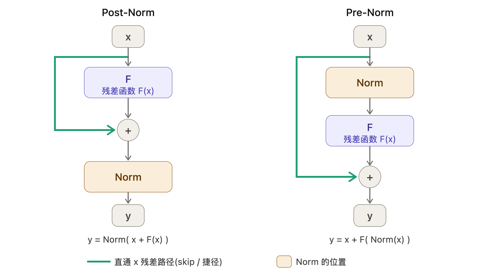
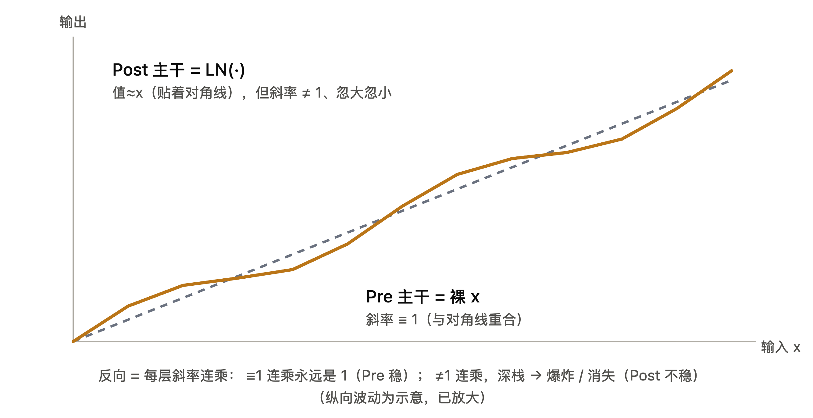

从"残差连接"这个名字说起，到一个三行推导封死的死路
本文只回答一条链上的问题：那根旁路为什么叫"残差连接"？Pre/Post-Norm 的"前后"到底指谁？前向值明明都贴着 $x$，凭什么一个稳一个不稳？既然 Norm 的雅可比是祸根，能不能设计一种雅可比更好的 Norm？
最后一问的答案是不能，而且原因很干脆。全文会出现两次同一个教训：看表象会看错，得看真正干活的那个量。
先说一个几乎所有人都卡过的地方。残差块写成
$$y = x + F(x)$$那根绕过 $F$ 的旁路上，流的是 $x$；真正的"残差"（差值）是 $F(x) = y - x$，它在支路上。既然线里走的是 $x$ 不是残差，为什么这根线叫残差连接？
答案："残差连接"是按它实现的思想命名的，不是按线里流的是什么命名的。
设某个模块理想中应该算出的输出是 $H(x)$——$H$ 就是"目标映射"，$x$ 是输入。
普通做法：堆几层网络，硬让它们把 $x$ 变成 $H(x)$。
ResNet 换了个写法。任何 $H(x)$ 都可以恒等地拆成两部分：
$$H(x) = x + F(x), \qquad F(x) = H(x) - x$$然后让网络里的层去学 $F(x)$，而不是直接学 $H(x)$。最后把 $x$ 加回来，输出 $x + F(x)$ 正好等于 $H(x)$，结果完全一样。但层要学的东西变了：不再是"从头算出整个 $H(x)$"，而是只算"$H(x)$ 相对 $x$ 需要补的那点改动量"——这个差，就叫残差（residual）。
为什么这样更好学，两个原因：
打个比方。你要把一张照片 $x$ 修成目标效果 $H(x)$：
所以那条 $+x$ 旁路之所以叫"残差连接"，正是因为它让"只学改动量 $F$"这套玩法成立。名字指向的是机制，不是说"这根线上流着残差"。
值得一提：同一根旁路还有两个同义名——skip connection（跳接）、shortcut（捷径）。这两个恰恰是按"线里走 $x$、抄了条近路"来命名的。
| 名字 | 命名依据 | 它在说什么 |
|---|---|---|
| 残差连接 (residual connection) | 按思想 | 它让"只学残差 $F$"这套方法成立 |
| 跳接 / 捷径 (skip / shortcut) | 按结构 | 线里走的是 $x$，抄了条近路 |
同一根旁路、两套命名视角，两个都对。如果你的直觉是"线里明明流的是 $x$"，那你的直觉对应的正是 skip/shortcut 这一组名字。
名字指向机制，不指向表象。记住这句——第三节还要用一次，形式换了，陷阱是同一个。
命名那件事澄清之后，紧接着容易出第二个混淆：常见说法里"Norm 放在残差连接之后 / 之前"，这个"前后"指的到底是谁的前后？
它跟上一节的命名毫无关系。它问的是：LayerNorm 放在那个 $\oplus$（相加这一步）的哪一侧。
| 写法 | 公式 | Norm 的位置 |
|---|---|---|
| Post-Norm | $y = \mathrm{LN}(x + F(x))$ | 在相加之后，压在主干上 |
| Pre-Norm | $y = x + F(\mathrm{LN}(x))$ | 在相加（以及 $F$）之前，长在支路上 |
所以"残差连接之后/之前" $=$ "$\oplus$ 相加这一步的后/前"。"残差连接"这名字怎么来的（思想）和"前/后"指谁（Norm 相对 $\oplus$ 的位置）本来是两件事，被揉进同一句话里，才显得绕。

梯度从 $y$ 回到 $x$ 时，Pre-Norm 一路无阻；而 Post-Norm 每往回穿一层就得过一道 LN，深栈一叠起来就容易失稳。这就是"梯度高速公路"这个说法的来源。
LN = LayerNorm，层归一化。它拿到一个向量（比如某个 token 的隐藏表示，维度 $d$），先算这 $d$ 个分量的均值和方差，减均值、除标准差，归一化成"均值 0、方差 1"；再乘一个可学习的缩放 $\gamma$、加一个可学习的偏移 $\beta$。目的是把每一步的激活幅度压在稳定区间里，不让它在深层里越滚越大或越缩越小。
叫"Layer"是因为它在单个 token 的特征维度内部做归一化（对比 BatchNorm 是跨一个 batch 的样本做）。
这里是全文最容易翻车的地方，也是第一节那句话第二次兑现的地方。
一个非常自然的疑问：不论 Post 还是 Pre，$x$ 都是直通、$F(x)$ 都是小量，所以输出看上去都在 $x$ 附近。既然前向都差不多，凭什么一个稳一个不稳？
脱节就在这里：稳定性不是前向的性质，是反向（梯度）的性质；它由导数决定，不由函数值决定。而"函数值贴近 $x$"根本不蕴含"导数贴近 $I$"。
前向（值）：两个确实都 $\approx x$，这一层的直觉没错。$F$ 小 $\Rightarrow$ Pre 的 $y = x + F(\cdot) \approx x$；Post 的 $y = \mathrm{LN}(x + F) \approx \mathrm{LN}(x) \approx x$（假设 $x$ 已大致归一化）。
反向（导数）：决定稳定性的是 $\partial y / \partial x$，而这两个截然不同：
$$\text{Pre:}\quad \frac{\partial y}{\partial x} = I + J_F \cdot J_{\mathrm{LN}} \;\approx\; I$$ $$\text{Post:}\quad \frac{\partial y}{\partial x} = J_{\mathrm{LN}} \cdot (I + J_F) \;\approx\; J_{\mathrm{LN}}$$看出来了："$F$ 是小量"这同一个条件，在 Pre 里让导数 $\approx I$（干净），在 Post 里让导数 $\approx J_{\mathrm{LN}}$（不是 $I$）。前向都 $\approx x$，导数却一个 $\approx I$、一个 $\approx J_{\mathrm{LN}}$。差别全在这。
因为"值"和"斜率"是两回事。举一个能手算的例子——RMSNorm：
$$g(x) = \frac{x}{\mathrm{RMS}(x)}, \qquad \mathrm{RMS}(x) = \frac{\lVert x \rVert}{\sqrt{d}}$$在任何满足 $\mathrm{RMS}(x) = 1$ 的点上，$g(x) = x$，值完全相等。但它的雅可比是
$$J_g = \frac{1}{\mathrm{RMS}(x)}\left(I - \hat{x}\hat{x}^{\top}\right), \qquad \hat{x} = \frac{x}{\lVert x \rVert}$$沿 $\hat{x}$（径向 / 模长）方向，$J_g \hat{x} = 0$——斜率是 0。你把 $x$ 沿它自己的方向拉长一点，$g$ 几乎不变，因为它会重新把模长归一化掉。
值落在 $x$ 上，斜率却是 0。这就是"值近 $x$ $\neq$ 斜率近 $1$"的铁证。

因为反向传播是把每层的导数（斜率）连乘，不是把函数值连乘。
前向"值近 $x$" $=$ 走完一圈回到几乎同样的海拔；
反向稳定性 $=$ 沿途每一步的坡度。
你完全可以"终点海拔几乎没变"，但一路坡度忽陡忽缓——把这些坡度连乘起来（深栈几十层），照样翻车。
原版 Transformer 必须做学习率 warmup——开头几千步把学习率从 0 慢慢爬上去。原因正是 Post-Norm 在初始化时靠近输出那几层的梯度特别大，一上来就用大学习率会直接发散。
Pre-Norm 的梯度幅度对深度基本不敏感，所以可以不 warmup、能上大学习率、能随便堆层。这就是 GPT-2/3、LLaMA 一律用 Pre-Norm 的工程理由。
既然祸根是 $J_{\mathrm{norm}}$，一个很自然的想法是：换一种 Norm，让它的雅可比本身就接近 $I$，不就行了？
LayerNorm 和 RMSNorm 的雅可比（略去 $\gamma$）：
| 算子 | 雅可比 | 零空间 | 秩 |
|---|---|---|---|
| LayerNorm | $\frac{1}{\sigma}\left(I - \frac{1}{d}\mathbf{1}\mathbf{1}^{\top} - \hat{x}\hat{x}^{\top}\right)$ | 抹掉 2 个方向（均值方向 + 径向） | $d-2$ |
| RMSNorm | $\frac{1}{\mathrm{RMS}}\left(I - \hat{x}\hat{x}^{\top}\right)$ | 抹掉 1 个方向（径向） | $d-1$ |
两者坏在同一处：那个 $1/\sigma$（或 $1/\mathrm{RMS}$）缩放因子逐层连乘 $\prod_l (1/\sigma_l)$ 会漂移——这才是主因；再叠上被抹方向的梯度归零。
RMSNorm 只抹 1 维、比 LayerNorm"干净一点"，但那点差别是几千维里少抹一维，微不足道；$1/\mathrm{RMS}$ 的漂移它一分不少。所以 RMSNorm 救不了 Post-Norm。实践里也没人用 RMSNorm 去修 Post——LLaMA 用 RMSNorm，是把它放在 Pre 位置。稳的是位置，不是 Norm 的种类。
任何"做归一化"的算子，本质是抹掉尺度信息，即对缩放不变：
$$\mathrm{norm}(c \cdot x) = \mathrm{norm}(x) \qquad \forall\, c > 0$$把两边对 $c$ 求导，在 $c = 1$ 处取值：
于是：
$$\boxed{\,J_{\mathrm{norm}} \cdot \hat{x} = 0\,}$$只要它真的归一化（对尺度不变），它的雅可比就必然把 $\hat{x}$ 这个方向打成 0。这个零空间是被"归一化"这件事本身逼出来的，不是设计失误。再加上为抵消输入尺度，正交方向上必带 $1/\sigma \neq 1$ 的缩放。
所以：一个 $J \approx I$ 的"Norm"，就是一个什么都不归一化的 Norm——自相矛盾。
想靠换 Norm 把主干那道雅可比变干净，此路不通。
"让深层网络稳定"这个真实目标是能达成的，只是不从 Norm 的雅可比下手，而是改别的地方。三条路：
这就是 Pre-Norm。绕一圈回来，它正是"让主干雅可比稳"的最直接解：主干留一个裸的 $I$，把 Norm 的脏雅可比关进支路。
让 $I$ 在 $J_{\mathrm{norm}}(I + J_F)$ 里重新占主导：
Fixup、NFNet（normalizer-free）证明深网络可以完全无 Norm 训练，把"控尺度"的活交给精心设计的初始化和残差缩放。
Pre-Norm 不是白拿好处。它那条干净通路的代价在前向：每层往 $x$ 上加一个约单位方差的 $F$，残差流方差随深度线性增长；越深，新加的 $F$ 相对整条流就越小，深层的边际贡献被稀释（有人称之为"深层失效"或表示坍缩）。
Post-Norm 每层都把流重新归一化，前向幅度被牢牢摁住，正则更强、混合更充分。
| 反向（梯度） | 前向（幅度） | |
|---|---|---|
| Pre-Norm | ✅ 主干留裸 $I$，好训、稳、不挑学习率、随便加深 | ❌ 残差流方差随深度线性涨，深层贡献递减 |
| Post-Norm | ❌ LN 雅可比连乘，难训、要 warmup 或特殊初始化 | ✅ 每层重新归一化，幅度受控、正则更强 |
关于"Post-Norm 质量更好"的限定：在若干设定下（如 DeepNet 报告的深层机器翻译任务），把 Post-Norm 训稳之后，其收敛质量可以不逊于甚至略优于 Pre-Norm。但这依赖任务、深度和初始化方案，不是普遍结论，也不构成"应该换回 Post-Norm"的建议。当前大模型一边倒选 Pre-Norm，选的是规模化时的训练鲁棒性，不是因为它在每个意义上都更优。
稳定要的是每层主干雅可比的奇异值都贴近 1（dynamical isometry）。
达成它有两条路——主干上留一个干净的 $I$（Pre-Norm），或把 Norm 的扭曲缩到相对 $I$ 很小（DeepNorm / ReZero 那类残差缩放）。
唯独没有"造一个雅可比是 $I$ 的 Norm"这条路，因为那等于造一个不归一化的归一化。
回头看，这篇里两个卡点其实是同一个错误的两种形态：
| 卡点 | 表面读法 | 真正干活的东西 |
|---|---|---|
| 那根线为什么叫"残差连接" | 线里流的是 $x$，不是残差 | 名字指向机制——它让"只学 $F$"成立 |
| Pre 与 Post 为什么一稳一不稳 | 前向值两边都 $\approx x$ | 稳定性看导数，不看函数值 |
第二个之所以难，正因为第一个已经先示范过一次同样的陷阱：照着表象读会读错，得看真正起作用的是什么。
而第四节那个三行推导，是这条思路的终点——它没有给出一个更好的 Norm，而是证明了那个方向上没有东西可找。知道哪条路走不通，和知道哪条路走得通，是同等分量的知识。